Cell-cell communication (CCC) is the process by which cells send and receive molecular signals — typically through ligand-receptor (LR) interactions — to coordinate tissue function. CCC analysis infers these interactions from single-cell transcriptomics data by identifying which ligand-receptor pairs are expressed between which cell types, often scoring each interaction by its magnitude (e.g., expression level, interaction score) and specificity (e.g., a p-value quantifying how cell-type-specific the interaction is).
CCCPlot provides a unified interface to visualize CCC inference results
(from tools like CellPhoneDB, LIANA, CellChat, NicheNet, etc.) across many
plot types. It supports two fundamental modes:
Aggregation mode (method = "aggregation", the default): Ligand-receptor
pairs are aggregated per source-target cell type pair. This shows which
cell types communicate and how strongly. Supported plot types: "network",
"chord"/"circos", "heatmap", "sankey"/"alluvial", "dot".
Interaction mode (method = "interaction"): Individual ligand-receptor
pairs are plotted. This shows which specific LR pairs mediate the
communication. Supported plot types: "dot", "network", "heatmap",
"box", "violin", "ridge".
The "linkedheatmap" plot type is a special case: it does not use the
method parameter. It displays a side-by-side heatmap where the left side
shows ligand expression across source cell types and the right side shows
receptor expression across target cell types, with links between them
representing the LR pairs. This plot type requires ligand_means and
receptor_means columns.
Under the hood, CCCPlot preprocesses the data (aggregating or
reformatting as needed) and delegates rendering to the corresponding
plotthis package function. All styling and layout arguments accepted by
those functions can be passed through ....
Usage
CCCPlot(
data,
plot_type = c("dot", "network", "chord", "circos", "heatmap", "sankey", "alluvial",
"box", "violin", "ridge", "linkedheatmap"),
method = c("aggregation", "interaction"),
magnitude = waiver(),
specificity = waiver(),
ligand_expr = "ligand_means",
receptor_expr = "receptor_means",
magnitude_agg = length,
magnitude_name = "No. of interactions",
meta_specificity = "sumlog",
split_by = NULL,
x_text_angle = 90,
link_curvature = 0.2,
link_alpha = 0.6,
facet_by = NULL,
show_row_names = TRUE,
show_column_names = TRUE,
values_fill = 0,
right_row_dend_side = "right",
columns_split_by = NULL,
rows_split_by = NULL,
...
)Arguments
- data
A data frame containing cell-cell communication inference results. Must include the columns
source,target,ligand, andreceptor(as character or factor). Typically also includes one or more numeric columns for interaction magnitude and specificity. See the Data format section above for details.- plot_type
The type of visualization. Default is
"dot". Possible values:"network": Source and target cell types as nodes, interactions as edges. Edge thickness encodes magnitude. Acceptslink_curvatureandlink_alphastyling. Whenmethod = "interaction", nodes are ligands and receptors instead, colored by source-target pair."chord","circos"(aliases): Chord diagram linking source and target cell types. Only available withmethod = "aggregation"."heatmap": Source cell types on rows, target cell types on columns, magnitude encoded as fill color. Whenmethod = "interaction", rows are individual LR pairs and columns are split by source."sankey","alluvial"(aliases): Flow diagram from source to target cell types. Only available withmethod = "aggregation"."dot": Source vs target grid with dot size encoding magnitude and (optionally) dot color encoding specificity. Available in both methods."box": Box plots of interaction strengths. Each panel is a source cell type, x-axis is target cell type. Only available withmethod = "interaction"."violin": Violin plots of interaction strengths. Layout is the same as"box". Only available withmethod = "interaction"."ridge": Ridge (joy) plots of interaction strengths. Rows are target cell types, faceted by source. Only available withmethod = "interaction"."linkedheatmap": Side-by-side heatmaps showing ligand expression (left, by source cell types) and receptor expression (right, by target cell types) with LR pair links between them. Requiresligand_exprandreceptor_exprcolumns. Does not use themethodparameter.
- method
How to represent the data. Default is
"aggregation"."aggregation": Aggregate all LR pairs for each source-target cell type combination. Plots show cell-type-level communication."interaction": Plot individual LR pairs. Plots show LR-pair-level detail. Amagnitudecolumn is required.
- magnitude
The name of the column to use as the communication magnitude (e.g.,
"lrscore","sca_weight"). When not specified (default), the second-to-last column ofdatais used. The chosen column must be numeric. For LIANA outputs, common magnitude columns include"lrscore","sca_weight", or"cellphonedb_pvalue"(after transformation). See https://liana-py.readthedocs.io/en/latest/notebooks/basic_usage.html#Tileplot for available LIANA methods.- specificity
The name of the column to use as the communication specificity (e.g., a p-value such as
"pvalue"or"cellphonedb_pvalue"). When not specified (default), the last column ofdatais used. The chosen column must be numeric. Set toNULLif your method does not produce a specificity score.- ligand_expr
The name of the column containing the mean (or otherwise summarized) expression of the ligand. Default is
"ligand_means". Only used whenplot_type = "linkedheatmap".- receptor_expr
The name of the column containing the mean (or otherwise summarized) expression of the receptor. Default is
"receptor_means". Only used whenplot_type = "linkedheatmap".- magnitude_agg
A function used to aggregate the magnitude values across multiple LR pairs within each source-target group. Applied only in
method = "aggregation". Default islength(), which counts the number of LR interactions. Common alternatives:mean(),sum(),median().- magnitude_name
A label for the aggregated magnitude that appears in plot legends and axis titles. Default is
"No. of interactions". Adjust this to matchmagnitude_agg(e.g., use"Mean score"whenmagnitude_agg = mean).- meta_specificity
The meta-analysis method used to combine multiple specificity p-values within each source-target group into a single group-level p-value. Applied only in
method = "aggregation"when aspecificitycolumn is available. Default is"sumlog"(Fisher's method). Must be one of the methods provided by the metap package:"invchisq": Inverse chi-squared method"invt": Inverse t method"logitp": Logit method"meanp": Mean p method"meanz": Mean z method"sumlog": Sum of logs (Fisher's) method (default)"sump": Sum of p (Edgington's) method"two2one": Convert two-sided p-values to one-sided"votep": Vote counting method"wilkinsonp": Wilkinson's method
- split_by
An optional character vector of column names used to produce separate sub-plots (one per unique combination of values). When
NULL(default), a single plot is produced. For example, split by a condition column to compare communication patterns across experimental groups side-by-side.- x_text_angle
The angle (in degrees) for the x-axis tick labels. Used when
plot_typeis"dot"(both methods),"box", or"violin". Default is90(vertical labels).- link_curvature
The curvature of the edges in the network plot.
0gives straight lines; positive values curve edges outward. Default is0.2. Only used whenplot_type = "network".- link_alpha
The transparency (alpha) of the edges in the network plot. Values range from
0(fully transparent) to1(fully opaque). Default is0.6. Only used whenplot_type = "network". Only used whenplot_typeis"network"orlinkedheatmap".- facet_by
Deprecated. Not supported — must be
NULL(the default). Usesplit_byto produce separate plots instead.- show_row_names
Whether to display row names in heatmap plots. Default is
TRUE. Used whenplot_typeis"heatmap"or"linkedheatmap".- show_column_names
Whether to display column names in heatmap plots. Default is
TRUE. Used whenplot_typeis"heatmap"or"linkedheatmap".- values_fill
The fill value for missing (NA) cells in the heatmap matrix (e.g., when a source-target pair has no LR interactions). Default is
0. Used whenplot_typeis"heatmap"or"linkedheatmap".- right_row_dend_side
The side on which to place the row dendrogram in the right-hand heatmap of the linked heatmap plot. Must be
"left"or"right". Default is"right". Only used whenplot_type = "linkedheatmap".- columns_split_by
An optional character vector of column names used to split the columns of the heatmap into separate blocks. Only used when
plot_typeis"heatmap"or"linkedheatmap". Whenmethod = "interaction",sourceis automatically used as a column split.- rows_split_by
An optional character vector of column names used to split the rows of the heatmap into separate blocks. Only used when
plot_typeis"heatmap"or"linkedheatmap".- ...
Additional arguments forwarded to the underlying plotthis plotting function. The target function depends on
plot_type:"network"→plotthis::Network()"chord"/"circos"→plotthis::ChordPlot()"heatmap"→plotthis::Heatmap()"sankey"/"alluvial"→plotthis::SankeyPlot()"dot"→plotthis::DotPlot()"box"→plotthis::BoxPlot()"violin"→plotthis::ViolinPlot()"ridge"→plotthis::RidgePlot()"linkedheatmap"→plotthis::LinkedHeatmap()
Common arguments include
palette,theme,theme_args,legend.position,title,subtitle,width,height, andcombine(setcombine = FALSEto get a list of individual plots instead of a combined plot). See the documentation of each function for full details.
Value
A combined ggplot object (by default) representing the cell-cell
communication visualization. If combine = FALSE is passed via ..., or
if split_by produces multiple sub-plots and combine = FALSE, a list of
individual ggplot objects is returned instead. Each plot can be further
customized with standard ggplot2 functions.
Note
Data sources: CCCPlot is designed to work with the output of popular
CCC inference tools. The LIANA Python package
(https://liana-py.readthedocs.io/) provides a unified interface to
run multiple CCC methods and produces data frames in the format expected
here. CellPhoneDB output (e.g., via liana's CellPhoneDB wrapper)
works directly. The built-in dataset cellphonedb_res is an example of
this format.
Performance: For large datasets with many LR pairs, method = "aggregation" is faster and produces cleaner visualizations for overview
purposes, while method = "interaction" provides detail at the cost of
visual complexity when there are many source-target pairs.
Row/column ordering: To control the order of cell types in heatmaps,
dot plots, chord diagrams, etc., ensure the source and target columns
are factors with the desired level order before calling CCCPlot.
Data format
The input data frame is expected to have one row per ligand-receptor pair
per source-target cell type combination. This is the standard "tidy" output
format produced by LIANA and similar to the output of CellPhoneDB. Columns
source, target, ligand, and receptor are always required. At least
one magnitude column (a numeric score for the interaction) is also required.
When both a magnitude and a specificity column are present, the function
can encode both dimensions in the visualization (e.g., dot size for
magnitude and dot color for specificity in "dot" plots).
Method details
With method = "aggregation", the function groups data by source-target
pairs (and optionally split_by). The magnitude values for all LR pairs
within each group are combined using magnitude_agg (default: length,
i.e., count of LR pairs). If a specificity column is provided, individual
specificity p-values are combined into a single group-level p-value using
the meta-analysis method specified by meta_specificity (from the
metap package). This mode answers: "Which cell types communicate, and
how strong / specific is that communication?"
With method = "interaction", each LR pair is plotted individually. For
"dot" plots, specificity values are -log10-transformed and source cell
types are used for faceting (one facet per source). For "box", "violin",
and "ridge" plots, the source cell type is used for faceting and the
target cell type defines the x-axis or grouping.
See also
plotthis::Network(),plotthis::ChordPlot(),plotthis::Heatmap(),plotthis::SankeyPlot(),plotthis::DotPlot(),plotthis::BoxPlot(),plotthis::ViolinPlot(),plotthis::RidgePlot(),plotthis::LinkedHeatmap()— the underlying plotting functions.The LIANA framework for CCC inference: https://liana-py.readthedocs.io/
Review of CCC inference methods: https://www.sciencedirect.com/science/article/pii/S2452310021000081
CCPlotR package for alternative CCC visualization: https://github.com/Sarah145/CCPlotR
Examples
# \donttest{
# Load example CellPhoneDB results
set.seed(8525)
data(cellphonedb_res)
# --- Aggregation mode: overview of which cell types communicate ---
# Network: nodes = cell types, edges = communication, thickness = strength
CCCPlot(data = cellphonedb_res, plot_type = "network", legend.position = "none",
theme = "theme_blank", theme_args = list(add_coord = FALSE))
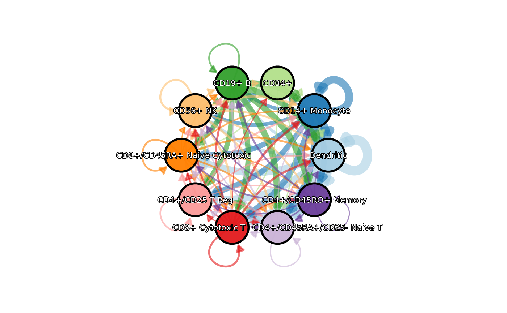
# Chord diagram: same data, circular layout
CCCPlot(cellphonedb_res, plot_type = "chord")
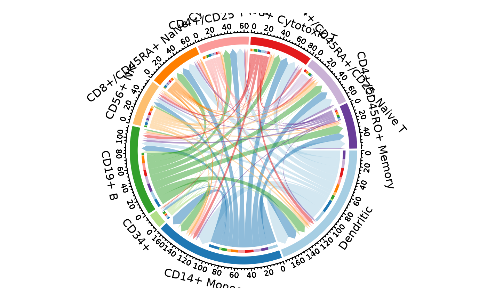
# Heatmap: source (rows) × target (columns), fill = number of LR pairs
CCCPlot(cellphonedb_res, plot_type = "heatmap")
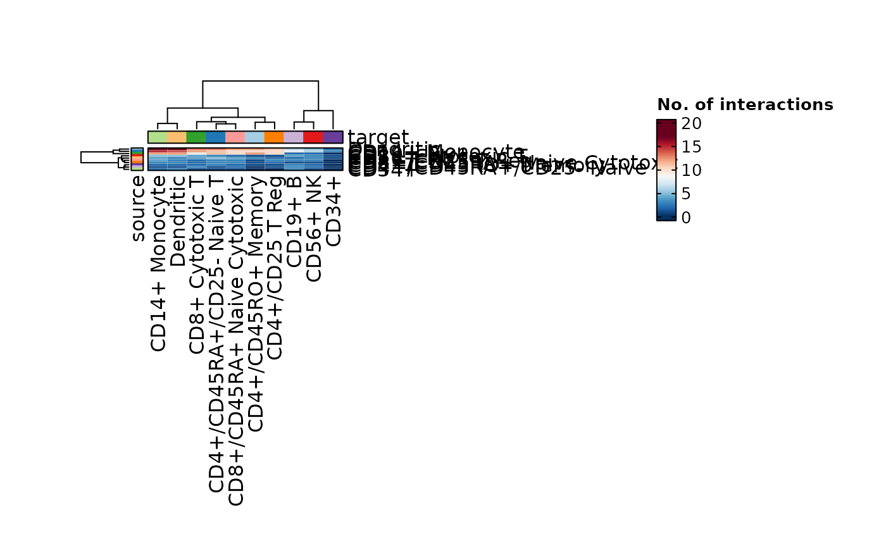
# Dot plot: dot size = magnitude, color = specificity
# Use mean interaction score instead of count
CCCPlot(cellphonedb_res, plot_type = "dot",
magnitude_agg = mean, magnitude_name = "Average Interaction Strength")
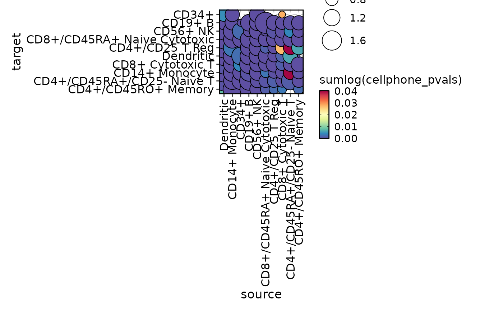
# Sankey (alluvial) flow diagram
CCCPlot(cellphonedb_res, plot_type = "sankey")
#> Missing alluvia for some stratum combinations.
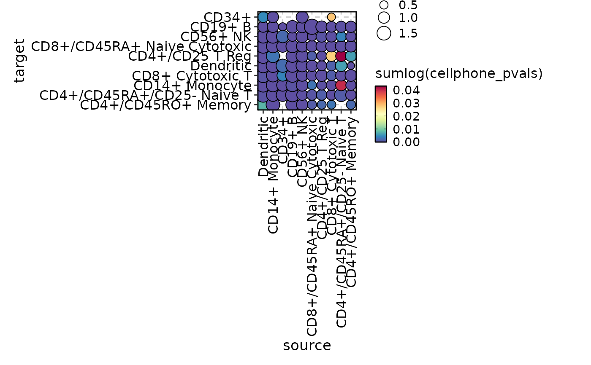
# Linked heatmap: ligand expression (left) ↔ receptor expression (right)
CCCPlot(cellphonedb_res, plot_type = "linkedheatmap")
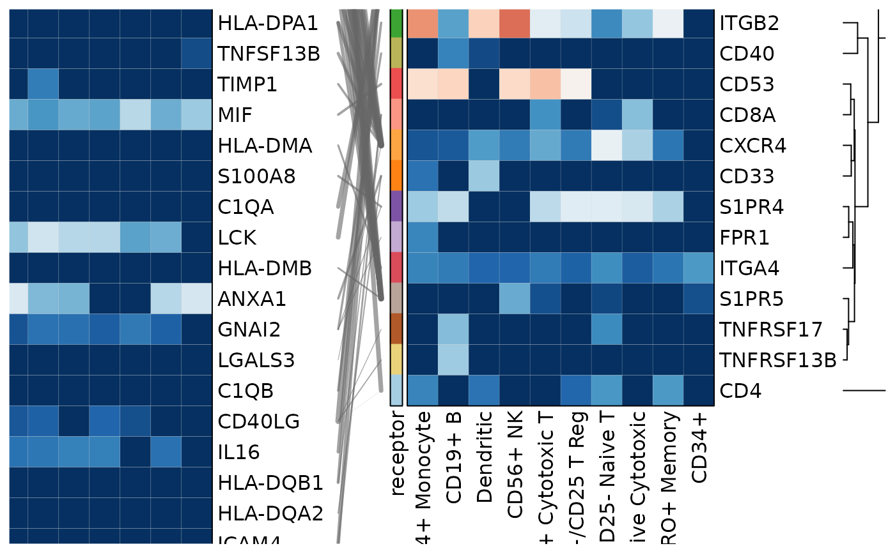
# --- Interaction mode: detail on individual LR pairs ---
# Subset to fewer cell types for readability
cellphonedb_res_sub <- cellphonedb_res[
cellphonedb_res$source %in% c("Dendritic", "CD14+ Monocyte"),]
# Dot plot: each LR pair as a row, faceted by source, color = specificity
CCCPlot(cellphonedb_res_sub, plot_type = "dot", method = "interaction")
#> Multiple columns are provided in 'y'. They will be concatenated into one column.
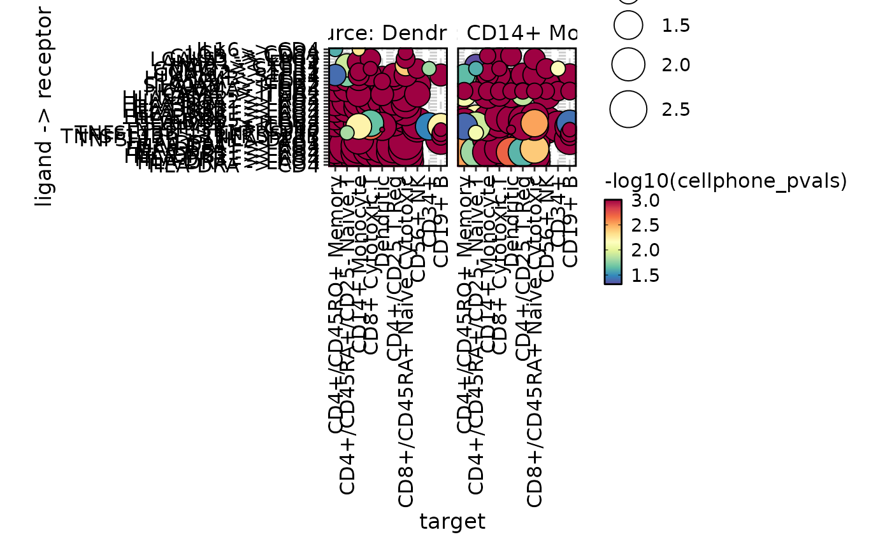
# Network: ligands and receptors as nodes, colored by source→target
CCCPlot(cellphonedb_res_sub, plot_type = "network", method = "interaction",
node_size_by = 1)
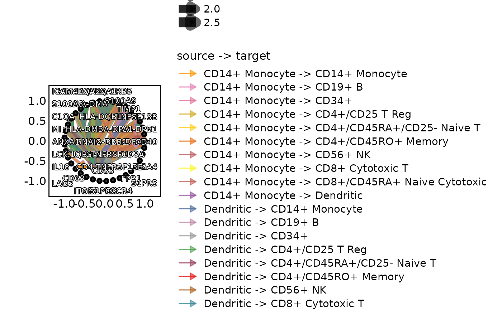
# Heatmap: rows = LR pairs, columns = target cell types
CCCPlot(cellphonedb_res_sub, plot_type = "heatmap", method = "interaction",
palette = "Reds")
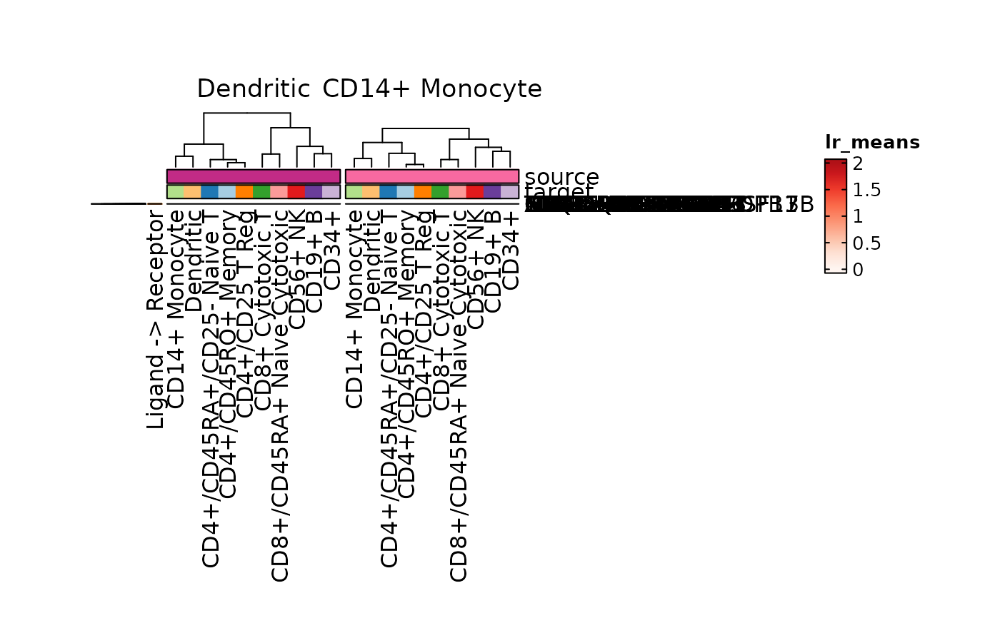
# Box plot: distribution of interaction strengths per source→target
CCCPlot(cellphonedb_res_sub, plot_type = "box", method = "interaction")
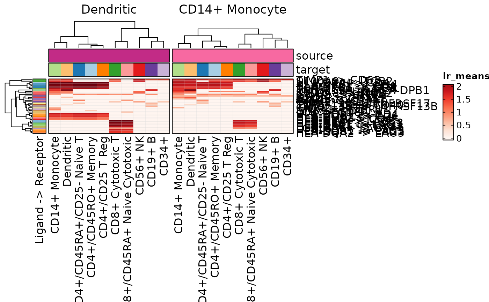
# Violin plot with overlaid box plots
CCCPlot(cellphonedb_res_sub, plot_type = "violin", method = "interaction",
add_box = TRUE)
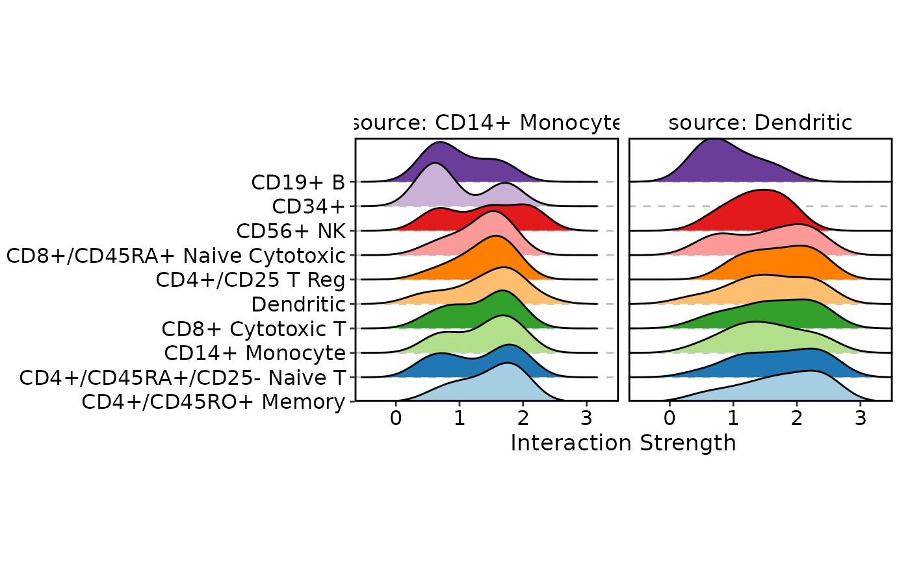
# Ridge plot: density of interaction strengths per target, per source
CCCPlot(cellphonedb_res_sub, plot_type = "ridge", method = "interaction")
#> Picking joint bandwidth of 0.311
#> Picking joint bandwidth of 0.285
#> Picking joint bandwidth of 0.311
#> Picking joint bandwidth of 0.285
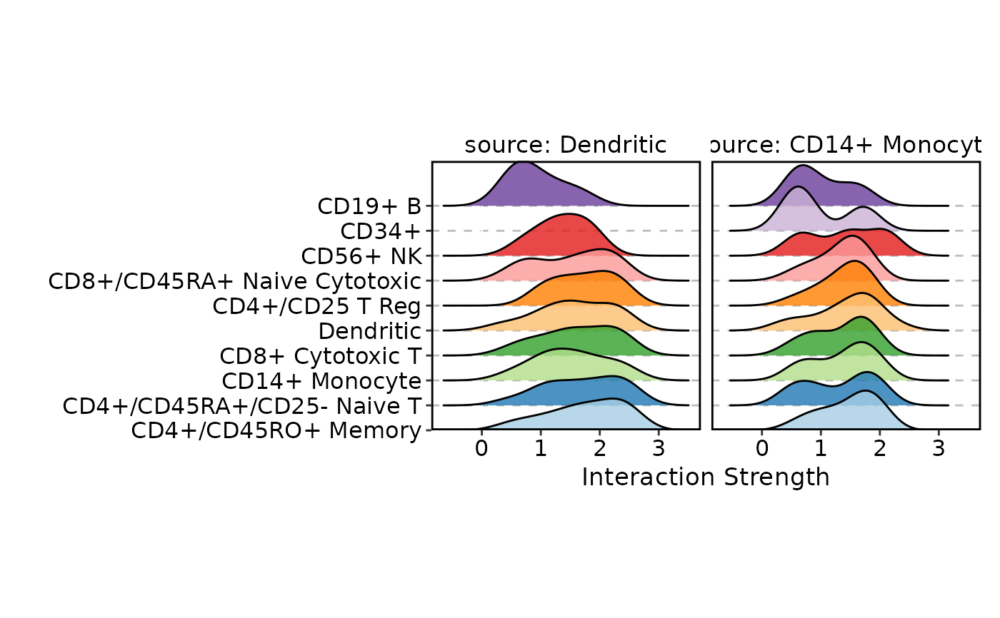
# }